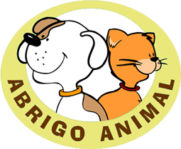

A Associação Cão Viver é uma organização não governamental, ou seja, não temos ajuda do governo para manter todos os peludos, e são quase 200 animais. Você pode fazer a diferença na vida deles. Gostaria de ajudar a Cão Viver? Escolha a que melhor se encaixa no seu perfil e disponibilidade:
Apadrinhe um peludo e doe amor;
Doe produtos para nosso bazar;
Doe remédios, material de limpeza/escritório/clínica;
Doe dinheiro, ração, pesticos;
Seja um voluntário, doe seu tempo e conhecimento;
Estamos aguardando a sua ajuda.